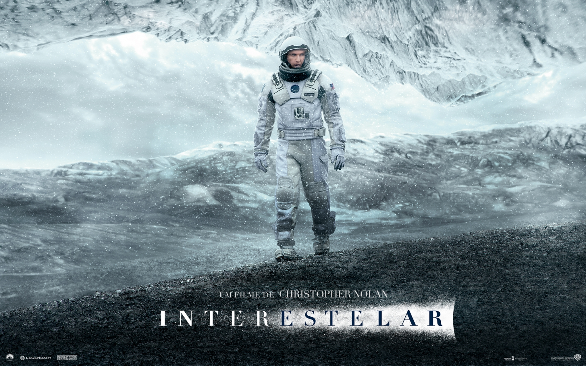
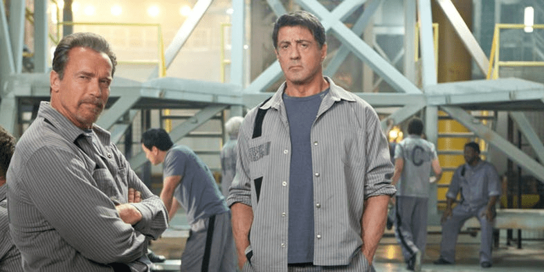

Hidden Figures
Enquanto os EUA disputam com a Rússia o envio do primeiro homem ao espaço, a NASA encontra em um grupo de
matemáticas afro-americanas o talento que foi responsável pelas maiores operações na história dos EUA. Baseado na história real de
três dessas mulheres, conhecidas como “computadores humanos”, o longa mostra como foi o lançamento do astronauta John Glenn em
órbita. Dorothy Vaughn, Mary Jackson e Katherine Johnson superaram preconceitos de raças de gênero e se transformaram em heroínas.
Interestelar

Num cenário de catástrofe, o planeta Terra começa a sofrer com crises ambientais sérias. A solução encontrada pela NASA
é descobrir outro planeta onde os humanos possam habitar.A missão de Cooper, ao lado de outros astronautas,
é descobrir qual planeta será a nossa futura casa e salvar a humanidade.
Com uma trama complexa, o filme Interestelar levanta uma série de dilemas morais e éticos difíceis.
John Wick
John Wick é uma franquia de mídia de suspense e ação neo-noir americana criada pelo roteirista Derek Kolstad
e estrelada por Keanu Reeves como John Wick, um ex-assassino que é forçado a voltar ao submundo do crime que havia abandonado.
Mission Impossible

Missão: Impossível é uma série de filmes de espionagem de ação americana, baseada na série de TV de 1966 criada por Bruce Geller.
A série é produzida e estrelada principalmente por Tom Cruise, que interpreta Ethan Hunt, um agente da Força de Missões Impossíveis
Rota de Fuga

Rota de Fuga acompanha a maior autoridade existente ao se falar em segurança
chamado Ray Breslin (Sylvester Stallone). Após analisar diversas prisões de segurança
máxima, ele desenvolve um modelo à prova de fugas. Quando é preso, Ray é enviado
justamente para a prisão que criou. Lá ele precisa encontrar uma brecha não imaginada até então, que permita sua fuga.